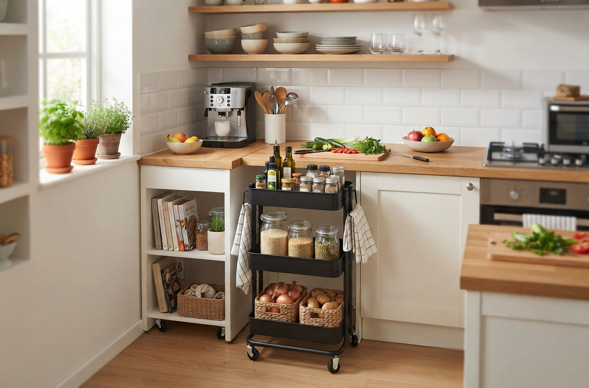

How to Maximize Space with Mobile Shelves

Mobile shelves (on wheels) or modular shelves let you adapt a small space to your needs. They must stay stable, so here is how to use them safely.
Choose a stable shelf
- Locking casters, on at least two of them.
- A wide base and rigid frame, with a stated maximum load.
- A suitable height: the taller and narrower it is, the more likely it is to tip.
Load it correctly
Put the heaviest objects on the bottom shelves and the lightest on top. Never exceed the maximum load. Do not let children climb on it.
Ideas for use
- Closet entrance: folded clothes, shoes, accessories.
- Kitchen: spices, cans, small appliances, with wheels locked during cooking.
- Office: documents, supplies, books.
- A light divider between two areas of a room.
Where to place it
Place the shelf on a flat floor. Avoid stairs, slopes, thick rugs and direct proximity to a heat source. Keep a clear path to doors and windows.
Cleaning and household products
Do not keep hazardous cleaning or DIY products on a shelf children can reach. Store them in a closed cabinet.
If the shelf is tall
Fasten it to the wall with a strap or anti-tip bracket, especially with young children at home. Check regularly that screws and wheels are tight.
Used with care, mobile shelves give small spaces a lot of flexibility.
Recommended products
As an Amazon Associate, I earn from qualifying purchases.